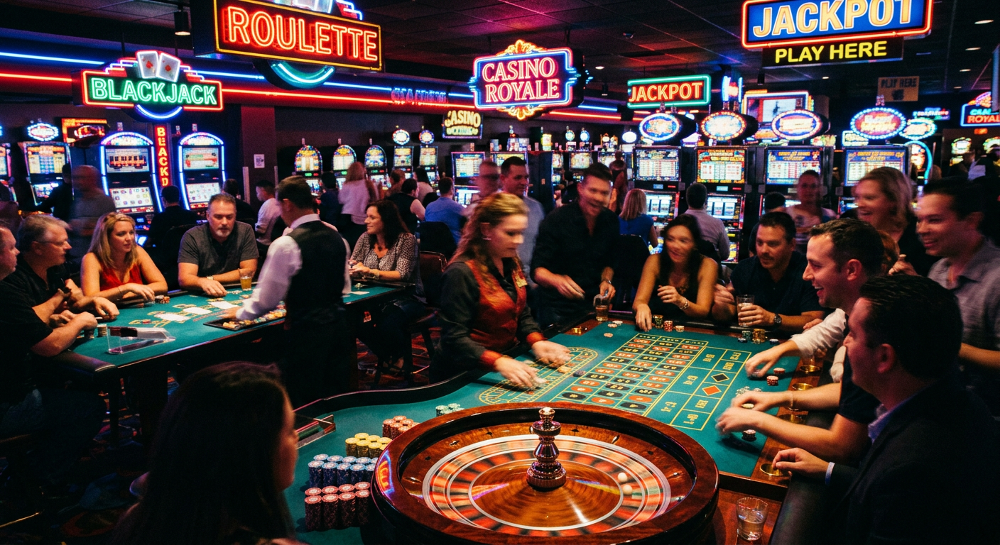
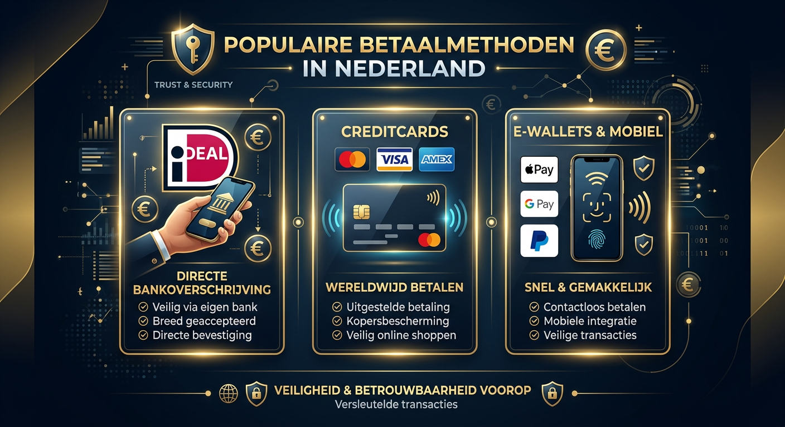
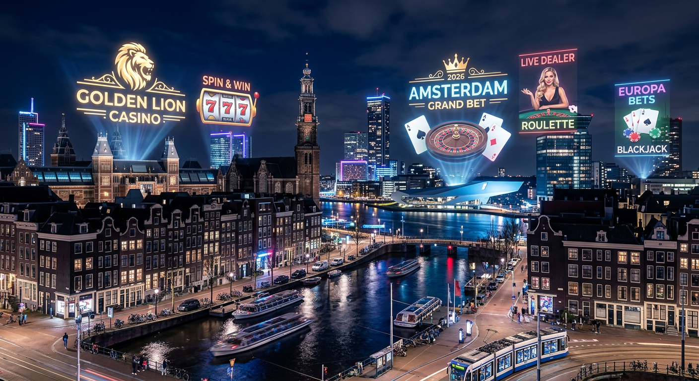
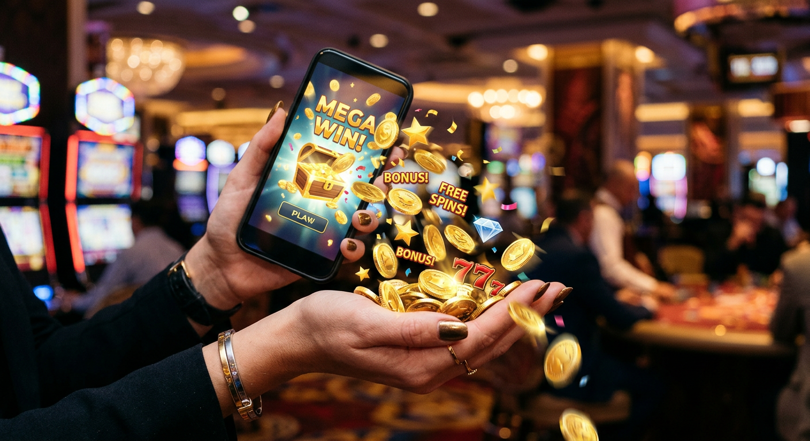

Online casino echt geld: Alles wat je moet weten over veilig gokken
De wereld van digitale kansspelen heeft in 2026 een ongekende vlucht genomen. Voor veel Nederlandse spelers is de zoektocht naar een betrouwbaar online casino echt geld een dagelijkse bezigheid geworden. Sinds de markt volledig is gereguleerd, is het aanbod niet alleen groter, maar ook veiliger dan ooit tevoren. Het spelen met eigen vermogen brengt een unieke spanning met zich mee die je niet vindt bij gratis demo-versies. Het gaat om de sensatie van de inzet en de potentie van een echte uitbetaling op je bankrekening.
Wanneer we spreken over een modern online casino echt geld, hebben we het over platformen die gebruikmaken van de nieuwste technologieën op het gebied van encryptie en eerlijk spel. In 2026 zijn zaken als kunstmatige intelligentie voor spelersbescherming en razendsnelle uitbetalingen de standaard geworden. Of je nu een doorgewinterde gokker bent of een nieuwkomer, het begrijpen van de dynamiek van de huidige markt is essentieel om je speelervaring zowel leuk als verantwoord te houden.
In dit uitgebreide artikel duiken we diep in de aspecten die een online casino echt geld de moeite waard maken. We kijken naar de wettelijke kaders in Nederland, de meest populaire spellen, en hoe je jouw winstkansen kunt optimaliseren door slim gebruik te maken van bonussen. Het landschap van online gokken is constant in beweging, en wij zijn hier om je door de jungle van aanbieders te gidsen naar de meest lucratieve en veilige bestemmingen.
Wat is een echt geld online casino?
Een echt geld casino is een digitaal platform waar spelers de mogelijkheid hebben om valuta in te leggen om kans te maken op winst. In tegenstelling tot sociale casino's of gratis apps, is hier sprake van een directe financiële transactie. In een online casino echt geld draait alles om risicomanagement en entertainment. Je stort een bedrag via methoden zoals iDeal of creditcard, en dit saldo gebruik je om inzetten te plaatsen op diverse kansspelen.
Het fundament van elk kwalitatief online casino echt geld is de software die erachter zit. In 2026 zien we dat providers steeds vaker gebruikmaken van blockchain-technologie om de transparantie van de Random Number Generators (RNG) te garanderen. Dit betekent dat elke draai aan een slot of elke gedeelde kaart bij Blackjack aantoonbaar eerlijk is. Dit vertrouwen is de basis waarop de hele industrie is gebouwd, zeker nu de concurrentie moordend is.
Bovendien biedt een online casino echt geld omgeving toegang tot exclusieve functies die je bij gratis spellen mist. Denk hierbij aan progressieve jackpots die in de miljoenen kunnen lopen, of deelname aan live dealer toernooien. De interactie met echte croupiers en medespelers zorgt voor een authentieke sfeer die de ervaring van een fysiek casino in steden als Amsterdam of Rotterdam evenaart, maar dan vanuit het comfort van je eigen huiskamer.
Hoe wij de beste aanbieders selecteren
Het selecteren van het juiste online casino echt geld is geen taak die we lichtvaardig opnemen. Ons team van experts hanteert een strikt protocol om elke aanbieder te beoordelen op basis van feiten en gebruikerservaringen. In 2026 zijn de standaarden hoger dan ooit, en alleen de absolute top overleeft onze strenge selectieprocedure. We kijken niet alleen naar de glimmende voorkant, maar graven diep in de algemene voorwaarden en de reputatie van de exploitant.
Een essentieel onderdeel van onze beoordeling is de financiële betrouwbaarheid van het online casino echt geld. We testen zelf het stortings- en uitbetalingsproces. Hoe lang duurt het voordat winsten worden uitgekeerd? Zijn er verborgen kosten? Een casino dat winsten binnen enkele minuten uitbetaalt, scoort aanzienlijk hoger dan een partij die spelers dagenlang laat wachten. Voor meer informatie over de werking van de kansspelmarkt kun je terecht op de officiële website van de Kansspelautoriteit.
Betrouwbaarheid en KSA-vergunningen
De ruggengraat van een legaal online casino echt geld in Nederland is de licentie van de Kansspelautoriteit (KSA). Zonder deze vergunning mag een aanbieder zijn diensten niet aanbieden op de Nederlandse markt. Wij controleren altijd of de licentie nog actueel is en of het casino zich houdt aan de strenge zorgplicht die de Nederlandse wetgeving voorschrijft. Dit beschermt jou als speler tegen oneerlijke praktijken en biedt een vangnet bij geschillen.
Naast de lokale licentie kijken we ook naar internationale erkenningen. Een online casino echt geld dat ook over vergunningen beschikt in Malta (MGA) of het Verenigd Koninkrijk toont aan dat het voldoet aan de strengste wereldwijde normen. De aanwezigheid van het CRUKS (Centraal Register Uitsluiting Kansspelen) logo is in 2026 een absolute vereiste voor elke legale Nederlandse site, aangezien dit systeem cruciaal is voor de preventie van gokverslaving.
Spelaanbod en software providers
Een superieur online casino echt geld onderscheidt zich door de kwaliteit en diversiteit van zijn spelportfolio. In 2026 verwachten spelers toegang tot de nieuwste titels van giganten als NetEnt en Play’n GO. We kijken specifiek naar de aanwezigheid van populaire titels zoals Gates of Olympus van Pragmatic Play, omdat dit soort spellen met hoge volatiliteit zeer geliefd zijn bij het publiek dat voor grote prijzen gaat.
Ook de innovatie in spelmechanismen speelt een rol. De introductie van Megaways heeft de manier waarop we naar gokkasten kijken veranderd, en een modern online casino echt geld moet deze titels in overvloed aanbieden. We beoordelen ook de kwaliteit van het live casino. Werken ze samen met Evolution Gaming? Zijn er Nederlandstalige tafels beschikbaar? Dit zijn de details die het verschil maken tussen een middelmatige en een uitmuntende goksite.
Klantenservice en gebruiksvriendelijkheid
Niets is frustrerender dan een technisch probleem wanneer je bij een online casino echt geld speelt. Daarom is een 24/7 bereikbare klantenservice via live chat een must. In 2026 zien we dat de beste casino's ook ondersteuning bieden via apps zoals WhatsApp of Telegram. Wij testen de reactiesnelheid en de deskundigheid van de medewerkers om te garanderen dat je altijd snel geholpen wordt.
De gebruiksvriendelijkheid strekt zich ook uit tot de mobiele ervaring. Een online casino echt geld moet naadloos werken op zowel iOS als Android apparaten. De navigatie moet intuïtief zijn, zodat je binnen drie klikken bij je favoriete roulette tafel of gokkast bent. We letten ook op de laadsnelheid van de spellen, aangezien niemand in 2026 nog wil wachten op een traag ladende interface.
Populaire spellen om met geld te spelen

Het hart van elk online casino echt geld wordt gevormd door de spellen. De variëteit is tegenwoordig duizelingwekkend, variërend van klassieke fruitautomaten tot complexe 3D-slots en interactieve spelshows. Voor de meeste spelers is de keuze van het spel gebaseerd op een balans tussen vermaak en het theoretische uitbetalingspercentage, ook wel bekend als de RTP (Return to Player).
In 2026 zien we een sterke trend richting spellen met een hoge interactie. Spelers willen niet alleen maar op een knop drukken; ze willen invloed uitoefenen of onderdeel zijn van een gemeenschap. Dit is waar de innovatieve krachten van de sector echt schitteren. Of je nu houdt van de snelle actie van gokkasten of de strategische diepgang van tafelspelen, een goed online casino echt geld heeft voor ieder wat wils.
Gokkasten en videoslots
De categorie gokkasten blijft de absolute koning van het casino. In een online casino echt geld vind je duizenden variaties. Van de nostalgische 'steptellers' tot de modernste videoslots met filmische graphics. De populariteit van Megaways slots blijft in 2026 onverminderd groot vanwege de tienduizenden manieren om te winnen bij elke draai. Dit zorgt voor een dynamiek die traditionele slots simpelweg niet kunnen bieden.
Een ander belangrijk aspect van slots in een online casino echt geld zijn de bonusfeatures. Spelers zoeken specifiek naar titels waar ze free spins kunnen winnen of waar ze een 'bonus buy' optie hebben. Titels als Starburst en Book of Dead zijn inmiddels klassiekers, maar we zien ook dat nieuwe releases van Pragmatic Play direct de top van de ranglijsten bestormen. Het draait allemaal om de juiste mix van thema, geluidseffecten en winstpotentieel.
Live casino spellen
Het live casino segment heeft de afgelopen jaren de grootste transformatie ondergaan. Dankzij high-definition streams en augmented reality voelt het alsof je echt aan de tafel zit. In een online casino echt geld kun je aanschuiven bij professionele dealers voor een potje blackjack of roulette. De sociale interactie via de chatfunctie maakt het een veel minder eenzame ervaring dan het spelen tegen een computer.
Naast de klassiekers zijn 'Game Shows' enorm populair geworden in 2026. Spellen zoals Crazy Time of Lightning Roulette combineren traditionele gokelementen met een entertainmentshow-vibe. Voor veel bezoekers van een online casino echt geld is dit de ultieme vorm van vermaak, waarbij de spanning van de inzet hand in hand gaat met een spectaculaire presentatie en vermenigvuldigers die de winst enorm kunnen vergroten.
Tafelspelen zoals Blackjack en Roulette
Voor de strategen onder ons blijven de traditionele tafelspelen de belangrijkste reden om een online casino echt geld te bezoeken. Bij Blackjack draait alles om het minimaliseren van het huisvoordeel door de juiste beslissingen te nemen. In 2026 zijn er talloze varianten beschikbaar, zoals Infinite Blackjack of Power Blackjack, die elk hun eigen unieke regels en zij-inzetten hebben.
Roulette blijft de ultieme test van het geluk. Of je nu inzet op je geluksgetal of een veiliger spreiding kiest op rood of zwart, de spanning van het rollende kogeltje is tijdloos. In een modern online casino echt geld kun je kiezen tussen de Europese, Franse en Amerikaanse varianten. Wij raden altijd de Europese variant aan vanwege het lagere huisvoordeel door de aanwezigheid van slechts één nul op de cilinder.
Betalingsmogelijkheden in Nederland

De efficiëntie van geldtransacties is een doorslaggevende factor voor het succes van een online casino echt geld. In Nederland hebben we een luxe positie met een zeer geavanceerd bankwezen. Spelers verwachten dat hun stortingen direct beschikbaar zijn en dat hun opnames zonder onnodige vertraging worden verwerkt. In 2026 zijn 'instant payouts' niet langer een extraatje, maar een basisvereiste voor elke gerespecteerde aanbieder.
Bovendien zien we een diversificatie in de geaccepteerde betaalmethoden. Naast de traditionele bankoverschrijvingen zijn moderne oplossingen zoals MiFinity en diverse crypto-opties in opkomst. Een veelzijdig online casino echt geld biedt een breed scala aan opties, zodat elke speler een methode kan kiezen die past bij zijn of haar voorkeuren voor privacy, snelheid en gemak. Voor meer informatie over veilig online betalen kun je de website van de Betaalvereniging Nederland raadplegen.
Geld storten met iDEAL
In Nederland is iDEAL nog steeds de onbetwiste koning van de online betalingen. Voor een online casino echt geld is de integratie van iDEAL essentieel om de Nederlandse markt te kunnen bedienen. Het biedt de hoogste graad van veiligheid omdat de transactie plaatsvindt binnen de vertrouwde omgeving van je eigen bank. Bovendien zijn stortingen via iDEAL vrijwel altijd direct zichtbaar in je casino-account.
Het gebruik van iDEAL in een online casino echt geld zorgt er ook voor dat het casino direct je identiteit kan verifiëren via iDIN, wat het registratieproces aanzienlijk versnelt. In 2026 is deze koppeling zo naadloos dat je binnen enkele seconden na je eerste storting kunt beginnen met spelen. Dit gemak is een van de redenen waarom de Nederlandse gereguleerde markt zo succesvol is gebleken in het kanaliseren van spelers naar legale aanbieders.
Creditcards en e-wallets
Hoewel iDEAL dominant is, geven veel spelers in een online casino echt geld de voorkeur aan creditcards zoals Visa en Mastercard. Dit biedt vaak een extra laag bescherming en de mogelijkheid om aankopen uitgesteld te betalen (hoewel we altijd adviseren om alleen te spelen met geld dat je al hebt). Ook e-wallets zoals Skrill en Neteller blijven populair vanwege de anonimiteit die ze bieden ten opzichte van de reguliere bankafschriften.
Een opkomende speler in 2026 is MiFinity, een digitale portemonnee die steeds vaker wordt geaccepteerd door internationaal georiënteerde casino's. Ook de Paysafecard blijft een gewilde optie voor diegenen die liever met contant geld (via een voucher) hun account bij een online casino echt geld opwaarderen. Het geeft een gevoel van controle over de uitgaven, omdat je nooit meer kunt storten dan de waarde van de gekochte kaart.
Onze aanbevolen casino's voor 2026

Om je te helpen bij je keuze, hebben we een lijst samengesteld van de meest betrouwbare platformen van dit moment. Elk online casino echt geld op deze lijst is uitvoerig getest op eerlijkheid, snelheid van uitbetaling en kwaliteit van de klantenservice. Hier zijn onze topaanbevelingen voor dit jaar:
| Casino Brand | Belangrijkste Kenmerk | Bonus Hoogte | Speel Nu |
|---|---|---|---|
| Goldbet | Uitmuntend Live Casino | 100% tot €500 | Bezoek Goldbet |
| Newlucky | Snelste Uitbetalingen | 200 Free Spins | Bezoek Newlucky |
| Dragobet | Grootste Spelaanbod | €1000 Welkomstpakket | Bezoek Dragobet |
| Fortunicabet | Beste Mobiele App | Dagelijkse Cashback | Bezoek Fortunicabet |
| Spinorhino | Unieke Gamification | Reload Bonus op vrijdag | Bezoek Spinorhino |
| Lizaro | Hoge VIP Limieten | Exclusieve Toernooien | Bezoek Lizaro |
| Hidden Jack | Crypto Vriendelijk | Stortingsbonus + Spins | Bezoek Hidden Jack |
Bij Goldbet vind je een zeer solide ervaring, vooral voor degenen die houden van sportweddenschappen in combinatie met casinospellen. Newlucky is dan weer de perfecte keuze voor spelers die niet willen wachten op hun geld, met een gemiddelde verwerkingstijd van minder dan een uur. Het is belangrijk om bij elk online casino echt geld de specifieke voorwaarden te lezen voordat je een account aanmaakt.
Voor de avontuurlijke speler biedt Spinorhino een uniek loyaliteitsprogramma waarbij je punten verzamelt terwijl je speelt. Als je liever met grotere bedragen speelt, is Lizaro de plek waar je moet zijn vanwege hun uitstekende VIP-behandeling. Wat je voorkeur ook is, een online casino echt geld uit deze lijst garandeert een veilige en plezierige spelomgeving in 2026.
Bonussen en promoties begrijpen

Bonussen zijn het krachtigste marketinginstrument van een online casino echt geld. In 2026 zijn deze aanbiedingen creatiever dan ooit, maar ze zijn ook strenger gereguleerd om spelers te beschermen. Een goede bonus kan je bankroll een aanzienlijke boost geven, waardoor je langer kunt spelen of met hogere inzetten kunt gokken. Het is echter cruciaal om te begrijpen dat een bonus bijna nooit 'gratis geld' is zonder voorwaarden.
De kunst bij een online casino echt geld is het vinden van bonussen met eerlijke voorwaarden. We kijken hierbij naar de 'wagering requirements' of rondspeelvoorwaarden. Een bonus van 100% klinkt geweldig, maar als je het bedrag 50 keer moet rondspelen voordat je kunt uitbetalen, is de kans op echte winst klein. In 2026 zien we dat de beste casino's transparanter zijn geworden over wat een speler kan verwachten van een promotie.
Welkomstbonussen en free spins
De welkomstbonus casino is vaak de eerste kennismaking die een speler heeft met een nieuwe aanbieder. Dit kan een verdubbeling van je eerste storting zijn, vaak gecombineerd met free spins op een populaire gokkast. In een online casino echt geld is dit de ideale manier om het platform te verkennen zonder al te veel van je eigen kapitaal te riskeren. Let wel op welke spellen bijdragen aan de rondspeelvoorwaarden.
Vaak zijn free spins gebonden aan specifieke titels van grote providers. Een online casino echt geld kan bijvoorbeeld spins weggeven voor een nieuwe release van NetEnt om deze te promoten. In 2026 zien we ook steeds vaker 'wager-free' spins, waarbij de winst die je behaalt direct als echt geld op je balans wordt bijgeschreven. Dit soort eerlijke deals zijn zeer gewild onder Nederlandse gokkers.
Rondspeelvoorwaarden uitgelegd
Het begrijpen van de kleine lettertjes is essentieel bij elk online casino echt geld. Rondspeelvoorwaarden bepalen hoe vaak je het bonusgeld moet inzetten voordat het wordt omgezet in opneembaar saldo. Als je bijvoorbeeld €10 bonus krijgt met een factor van 30x, moet je voor €300 aan inzetten plaatsen. Voor velen is dit de grootste uitdaging bij online gokken met bonussen.
In 2026 zijn casino's verplicht om deze voorwaarden duidelijk zichtbaar te maken. Let ook op de maximale inzet die je mag doen terwijl een bonus actief is. Bij een online casino echt geld is dit vaak gelimiteerd tot €5 per draai. Overschrijd je dit, dan kan het casino je bonus en de daarmee behaalde winsten ongeldig verklaren. Een gewaarschuwd mens telt voor twee in de wereld van online promoties.
Stappenplan: Beginnen met spelen
Beginnen bij een online casino echt geld is in 2026 eenvoudiger dan ooit, maar het vereist nog steeds een paar zorgvuldige stappen. Het proces is ontworpen om zowel de speler als het casino te beschermen, conform de Nederlandse wetgeving. Volg dit stappenplan om een vliegende en veilige start te maken bij je gekozen platform.
- Kies een betrouwbaar casino: Gebruik onze toplijst om een aanbieder te vinden die bij je past.
- Registratie: Vul je persoonlijke gegevens eerlijk in. In 2026 wordt dit vaak gedaan via iDIN voor een directe verificatie.
- Limieten instellen: Dit is een verplichte stap. Stel in hoeveel je maximaal wilt storten en hoeveel tijd je wilt besteden in het online casino echt geld.
- Eerste storting: Ga naar de kassa, kies je favoriete betaalmethode (bijv. iDeal) en activeer indien gewenst je welkomstbonus.
- Spelen maar: Zoek je favoriete spel, of het nu roulette, blackjack of een moderne videoslot is, en geniet van de ervaring.
Vergeet niet dat verificatie (KYC - Know Your Customer) een wettelijke verplichting is. Een online casino echt geld zal je vragen om een kopie van je ID en soms een bewijs van adres voordat de eerste uitbetaling wordt verwerkt. In 2026 gaat dit proces dankzij AI-technologie vaak razendsnel, waardoor je identiteit binnen enkele minuten is bevestigd.
Verantwoord gokken en CRUKS
Gokken moet altijd een vorm van entertainment blijven. In een online casino echt geld is het risico op verlies echter reëel, en voor sommigen kan dit leiden tot problemen. De Nederlandse overheid heeft daarom het CRUKS-systeem in het leven geroepen. Dit register stelt spelers in staat om zichzelf met één klik uit te sluiten van alle legale Nederlandse goksites voor een periode van minimaal zes maanden.
Een verantwoord online casino echt geld biedt tools aan om je eigen gedrag te monitoren. Denk aan real-time meldingen over hoe lang je al speelt of hoeveel je hebt verloren. In 2026 zijn deze systemen nog geavanceerder; algoritmes kunnen problematisch speelgedrag herkennen nog voordat de speler het zelf doorheeft. Als je merkt dat je de controle verliest, zoek dan direct hulp bij instanties zoals de AGOG.
Het is ook belangrijk om te weten dat er opties zijn zoals het casino zonder licentie, maar we raden dit ten strengste af. Deze platformen bieden niet de bescherming die het CRUKS systeem en de KSA bieden. Veiligheid moet altijd je prioriteit zijn wanneer je in een online casino echt geld speelt. Speel alleen met geld dat je kunt missen en zie gokken nooit als een manier om schulden af te lossen.
Herlaadbonus: Waarom dit interessant is
Waar de welkomstbonus bedoeld is om nieuwe klanten te trekken, is de herlaadbonus (reload bonus) ontworpen om loyale spelers te belonen. Een online casino echt geld biedt deze bonussen vaak aan op vaste dagen in de week of als onderdeel van een speciale promotie. Het geeft je extra speelgeld bij een volgende storting, wat je kansen op een mooie winst vergroot zonder dat je extra diep in de buidel hoeft te tasten.
In 2026 zien we dat herlaadbonussen vaak gepaard gaan met lagere rondspeelvoorwaarden dan welkomstbonussen. Dit maakt ze strategisch zeer interessant voor de regelmatige bezoeker van een online casino echt geld. Sommige casino's, zoals Spinorhino, hebben een vaste 'Reload Friday' waarbij elke storting die dag een extra percentage aan bonusgeld oplevert. Het loont dus om de promotiepagina van je favoriete casino goed in de gaten te houden.
Bovendien worden herlaadbonussen vaak op maat gemaakt in 2026. Op basis van jouw speelgeschiedenis kan een online casino echt geld je een aanbieding sturen voor het speltype dat jij het leukst vindt. Ben je een fan van het live casino? Dan krijg je misschien een herlaadbonus die specifiek bedoeld is voor gebruik aan de blackjack-tafels. Deze persoonlijke benadering maakt de ervaring niet alleen leuker, maar ook potentieel winstgevender.
De opkomst van crypto in online casino's
De financiële wereld is in 2026 onomkeerbaar veranderd door de acceptatie van cryptovaluta. Ook in de wereld van het online casino echt geld zien we deze trend terug. Steeds meer platformen accepteren Bitcoin en Ethereum als legitieme betaalmiddelen. Dit biedt voordelen op het gebied van transactiesnelheid en, in sommige gevallen, lagere kosten vergeleken met traditionele banken.
Het spelen met crypto in een online casino echt geld vereist wel een basiskennis van digitale portemonnees. Het grote voordeel is de snelheid: een uitbetaling in Bitcoin kan vaak binnen enkele minuten op je wallet staan, terwijl een bankoverschrijving soms nog steeds een werkdag in beslag neemt. Bovendien is de transparantie van de blockchain een extra garantie dat transacties correct worden uitgevoerd en niet zomaar kunnen worden teruggedraaid.
Echter, de volatiliteit van crypto blijft een factor om rekening mee te houden. In een online casino echt geld dat crypto accepteert, wordt je saldo vaak omgezet naar een stabiele valuta zoals de Euro tijdens het spelen, om te voorkomen dat de waarde van je inzet fluctueert terwijl je aan het gokken bent. Platformen zoals Hidden Jack lopen voorop in deze integratie en bieden een naadloze ervaring voor de moderne, tech-savvy gokker.
Mobiel gokken in 2026
De tijd dat we achter een logge desktop computer moesten zitten om een online casino echt geld te bezoeken, ligt ver achter ons. In 2026 wordt meer dan 85% van alle inzetten in Nederland geplaatst via een smartphone of tablet. De technologie is inmiddels zo ver dat mobiele casino's kwalitatief niet meer onderdoen voor hun desktop-tegenhangers. Alles, van de registratie tot de live streams, werkt vlekkeloos op het kleine scherm.
De beste aanbieders van een online casino echt geld hebben eigen apps ontwikkeld die je via de App Store of Google Play kunt downloaden. Deze apps bieden extra features zoals push-notificaties voor exclusieve bonussen en biometrische inlogmogelijkheden (FaceID of vingerafdruk). Dit verhoogt niet alleen het gebruiksgemak, maar ook de veiligheid van je account aanzienlijk.
Ook de spellen zelf zijn 'mobile-first' ontwikkeld. Providers zoals Pragmatic Play en NetEnt ontwerpen hun interfaces zo dat ze met één duim te bedienen zijn. Of je nu in de trein zit of op de bank ligt, een online casino echt geld is altijd binnen handbereik. De komst van 5G en inmiddels de eerste 6G-netwerken in 2026 zorgt ervoor dat haperingen in live streams van het live casino nagenoeg tot het verleden behoren.
Software providers die het verschil maken
Achter elk succesvol online casino echt geld staan de software providers. Zij zijn de creatieve breinen die de spellen ontwikkelen waar wij zo van genieten. In 2026 is de markt geconsolideerd, maar er is nog steeds ruimte voor innovatieve studio's. NetEnt blijft een dominante speler met hun grafisch verbluffende slots, terwijl Play’n GO bekend staat om hun diepgaande verhaallijnen en verslavende gameplay-mechanieken.
Een andere gigant die je in elk goed online casino echt geld tegenkomt is Pragmatic Play. Hun "Drops & Wins" toernooien zijn in 2026 legendarisch en bieden spelers de kans op extra prijzen bovenop hun reguliere winsten. We zien ook dat kleinere studio's zich specialiseren in specifieke niches, zoals Megaways titels of zeer complexe wiskundige modellen die gericht zijn op de 'high rollers' die voor de echt grote klappers gaan.
De kwaliteit van de software bepaalt ook de eerlijkheid van het spel. Een online casino echt geld dat samenwerkt met gerenommeerde providers, laat haar spellen regelmatig testen door onafhankelijke instanties zoals eCOGRA of iTech Labs. Dit garandeert dat de RTP die in de spelbeschrijving staat, ook daadwerkelijk klopt. Vertrouwen in de software is immers de hoeksteen van de hele online gokervaring.
RTP en winstkansen uitgelegd
Wie in een online casino echt geld speelt, wil natuurlijk weten wat de kansen op winst zijn. De belangrijkste term hierbij is de RTP (Return to Player). Dit is een theoretisch percentage dat aangeeft hoeveel van de totale inzet op een spel op de lange termijn wordt terugbetaald aan de spelers. Een slot met een RTP van 96% keert gemiddeld €96 uit voor elke €100 die erin wordt gestopt.
Het is belangrijk om te begrijpen dat dit een gemiddelde is over miljoenen draaien. In een korte sessie bij een online casino echt geld kan alles gebeuren: je kunt je inzet verdubbelen of alles verliezen. Naast de RTP is ook de 'volatiliteit' van belang. Een spel met hoge volatiliteit (zoals veel Megaways slots) geeft minder vaak prijzen, maar als ze vallen, zijn ze vaak veel groter. Spelers die houden van gestage winsten kunnen beter kiezen voor spellen met een lage volatiliteit.
In 2026 zijn casino's transparanter dan ooit over deze cijfers. Je kunt vaak direct in het spelmenu de actuele RTP en de volatiliteitsindex inzien. Bij tafelspelen zoals blackjack en roulette liggen de winstkansen vaak hoger dan bij gokkasten, mits je de juiste strategie hanteert. Een slimme bezoeker van een online casino echt geld spreidt zijn risico's en kiest spellen die passen bij zijn persoonlijke speelstijl en bankroll.
Minimale stortingen en limieten
Niet iedereen wil direct honderden euro's inzetten. Gelukkig is er in 2026 veel aandacht voor de beginnende speler of degenen met een kleiner budget. Een 10 euro deposit casino is een uitstekende manier om met een klein bedrag de sfeer van een online casino echt geld te proeven. Je kunt met zo'n kleine storting vaak al uren speelplezier beleven, zeker als je kiest voor spellen met lage minimale inzetten.
Voor degenen die nog voorzichtiger willen beginnen, is er soms zelfs een 5 euro casino storting mogelijk, hoewel dit zeldzamer is vanwege de transactiekosten voor het casino. Aan de andere kant van het spectrum hebben we de VIP-spelers in een online casino echt geld. Zij zoeken juist naar hoge stortingslimieten en tafels waar ze duizenden euro's per hand kunnen inzetten bij blackjack of roulette. Een goed casino bedient beide groepen spelers met evenveel passie.
In 2026 zijn de stortingslimieten ook een belangrijk onderdeel van het verantwoord spelen beleid. Je wordt bij elk online casino echt geld gevraagd om je eigen dagelijkse, wekelijkse en maandelijkse limieten in te stellen. Dit voorkomt dat je in het heetst van de strijd meer geld uitgeeft dan je je eigenlijk kunt veroorloven. Het is een zelfbeschermingsmechanisme dat essentieel is voor een gezonde relatie met online gokken.
Cashback acties voor loyale spelers
Een van de meest gewaardeerde promoties in een online casino echt geld anno 2026 is de CashBack. Het principe is simpel: als je een periode van pech hebt en verliest, krijg je een percentage van je netto verlies terug in de vorm van bonusgeld of, in de beste gevallen, echt geld. Dit verzacht de pijn van het verlies en geeft je een tweede kans om het tij te keren.
Veel casino's, waaronder Fortunicabet, bieden een wekelijkse CashBack aan voor hun vaste spelers. Het percentage ligt meestal tussen de 5% en 15%. In een modern online casino echt geld wordt dit proces vaak geautomatiseerd uitgevoerd. Je hoeft er niet om te vragen; de cashback wordt elke maandagochtend netjes op je account bijgeschreven op basis van je resultaten van de week ervoor.
Voor VIP-spelers in een online casino echt geld kunnen deze percentages zelfs nog hoger oplopen. Het is een vorm van loyaliteitsbeloning die veel directer aanvoelt dan het sparen van punten voor een webshop. Omdat het risico op verlies inherent is aan online gokken, is een goede cashback-regeling vaak een doorslaggevende factor bij de keuze voor een langdurige relatie met een specifiek casinoplatform.
Vergelijking van top aanbieders
Om een helder beeld te krijgen van waar je het beste kunt spelen, is het nuttig om de verschillende aspecten van een online casino echt geld naast elkaar te leggen. In 2026 is de markt zo competitief dat de verschillen vaak in de details zitten. Terwijl het ene casino uitblinkt in het aantal slots, focust het andere zich volledig op de live casino ervaring met Nederlandse dealers.
In onze vergelijkingen kijken we ook naar de 'reputatie-score'. Hoe praten spelers op fora en review-sites over een specifiek online casino echt geld? Platformen die vroeger populair waren, zoals Casoola, hebben plaatsgemaakt voor nieuwe, dynamische merken die beter inspelen op de wensen van de moderne speler. Een casino dat luistert naar feedback en haar platform constant update, verdient bij ons altijd een streepje voor.
Uiteindelijk is het beste online casino echt geld voor jou een persoonlijke keuze. Sommigen geven de voorkeur aan de anonimiteit en snelheid van crypto-georiënteerde sites, terwijl anderen zweren bij de traditionele betrouwbaarheid van grote Nederlandse namen met een fysieke achtergrond. Door de verschillende opties uit onze toplijst te vergelijken, vind je gegarandeerd een plek waar jij je prettig en veilig voelt.
Tips voor slim online gokken
Hoewel winnen in een online casino echt geld uiteindelijk altijd een kwestie van geluk is, zijn er manieren om je kansen te optimaliseren en je verliezen te beperken. De eerste en belangrijkste regel is: ken de regels van het spel dat je speelt. Of het nu gaat om de complexe uitbetalingslijnen van een Megaways slot of de optimale strategie bij blackjack, kennis is macht.
Een andere tip is om slim om te gaan met je bankroll. Zet nooit je hele budget in op één enkele draai of hand. In een online casino echt geld is het beter om je inzetten te spreiden, zodat je langer kunt spelen en meer kansen hebt op een winnende reeks. Maak ook gebruik van de promoties, maar wees selectief. Kies de bonussen met de meest gunstige voorwaarden en laat de 'onmogelijke' bonussen links liggen.
Tot slot: weet wanneer je moet stoppen. In de euforie van een grote winst bij een online casino echt geld is het verleidelijk om door te spelen in de hoop op nog meer. De meest succesvolle spelers zijn echter degenen die hun winst tijdig uit laten betalen. Stel voor jezelf een winstdoel vast, en zodra je dat bereikt, klik je op de uitbetaalknop. Zo blijft online gokken een plezierige activiteit in plaats van een frustrerende zoektocht naar meer.
De toekomst van de Nederlandse gokmarkt
Kijkend naar de rest van 2026 en daarna, zien we dat de integratie van virtual reality (VR) de volgende grote stap zal zijn voor het online casino echt geld. Stel je voor dat je met een VR-bril op door een digitaal casino loopt, interactie hebt met andere avatars en plaatsneemt aan een virtuele tafel. De grens tussen de fysieke en digitale wereld zal steeds verder vervagen, wat de immersie alleen maar ten goede komt.
Daarnaast zal de rol van kunstmatige intelligentie in een online casino echt geld alleen maar groter worden. Niet alleen voor spelersbescherming, maar ook om de speelervaring te personaliseren. Je krijgt suggesties voor spellen die je echt leuk vindt, en bonussen die passen bij jouw speelstijl. De Nederlandse markt zal een van de meest innovatieve ter wereld blijven, dankzij de sterke technologische infrastructuur en een proactieve regelgever.
Het online casino echt geld landschap in Nederland is volwassen geworden. De wildgroei van onbetrouwbare aanbieders is grotendeels verdwenen, en wat overblijft is een hoogwaardige industrie die entertainment van wereldklasse biedt. Zolang veiligheid, eerlijkheid en verantwoord spelen de kernwaarden blijven, ziet de toekomst voor de Nederlandse online gokker er zeer rooskleurig uit.
Veelgestelde vragen over gokken met geld
Is het legaal om bij een online casino echt geld te spelen in Nederland?
Ja, mits het casino beschikt over een licentie van de Kansspelautoriteit (KSA). In 2026 zijn er tientallen legale aanbieders waar je veilig en volgens de Nederlandse wetgeving kunt gokken.
Hoe lang duurt een uitbetaling bij een online casino echt geld?
Dankzij moderne betaalmethoden worden uitbetalingen in 2026 vaak binnen enkele minuten tot enkele uren verwerkt. Bij sommige banken kan het tot één werkdag duren, maar de trend is 'instant payouts'.
Kan ik winnen met een casinobonus?
Zeker, maar je moet wel voldoen aan de rondspeelvoorwaarden. In een online casino echt geld is het belangrijk om de voorwaarden goed te lezen om te weten hoe je van bonusgeld echt opneembaar saldo kunt maken.
Wat moet ik doen als ik denk dat ik een gokprobleem heb?
Meld je direct aan bij het CRUKS register. Hiermee sluit je jezelf uit van alle legale gokwebsites in Nederland. Zoek daarnaast professionele hulp bij organisaties zoals AGOG of de verslavingszorg in jouw regio.
Welke spellen in een online casino echt geld hebben de beste winstkansen?
Spellen met een hoge RTP, zoals bepaalde varianten van blackjack en roulette, bieden statistisch de beste kansen. Ook sommige videoslots van NetEnt en Pragmatic Play hebben zeer competitieve uitbetalingspercentages.
Expert in online casino's en digitaal gokken met meer dan 8 jaar ervaring in de sector.